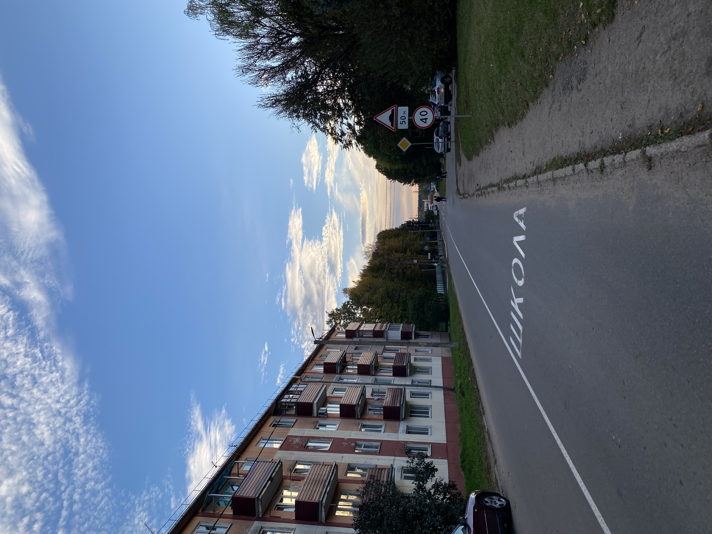

<html>
    <head>
        <title>История деревни</title>
        <meta http-equiv="content-type" content="text/html" charset="UTF-8">
         <!--Стиль для обтекания текста-->
    <style>
        .left{
            float: left;
            margin: 7px, 7px, 7px, 0px;
        }
        .right{
            float: right;
            margin: 7px, 7px, 7px, 0px;
        }
    </style>
    <!--Задний фон-->
    <style>
        body {
          background: url('фон.avif');
          background-repeat: repeat;
          background-size: cover;
        }
        </style>
       <!--Расположение текста по центру-->
 <style>
 .text-center {
    text-align: center;
    
  }
  </style>
  <!--Картинки по цетру с подписью-->
<style>
    .pic {
     display: block; 
     text-align: center; /* Выравнивание по центру */
     font-style: italic; /* Курсивное начертание */
     margin-top: 0; /* Отступ сверху */
     margin-bottom: 5px; /* Отступ снизу */
     color: #666; /* Цвет подрисуночной подписи */
    }
   </style>
    </head>
</html>

<body class="body">
    <h1 class="text-center">История Луговой слободы</h1>
    <p>В 1710 году упоминается как сильно пострадавшая в ходе Северной войны деревня Логовская Слобода в составе имения Смиловичи-Бакшты в Минском воеводстве ВКЛ.
        С 1917 до 1924 года сельсовет, в который входила Луговая Слобода, был расположен в деревне Обчак Сенницкой волости Минского уезда. В 1924 году по просьбе местных жителей сельсовет был перенесён в Луговую Слободу.
        До 2012 года Луговая Слобода входила в состав совхоза Волма. В настоящее время на территории совхоза функционирует Минская Овощная Фабрика.</p>
    <h2>Общие сведения</h2>
    <p>Агрогородок Луговая Слобода (в прошлом — деревня) расположен к юго-востоку от Минска, около Могилёвского шоссе. Расстояние от Луговой Слободы до МКАД почти в два раза больше — 13 километров.
        Население составляет около 1400 человек. <br> </scr>
    <br>В моём агрогородке есть всё необходимое для комфортной жизни тех людей, которые не любят уездить в город за одеждой и пить вкусный кофе утром:
        <ol>
            <li>Небольшой детский садик, находящийся рядом со школой</li>
            <li>Двухэтажная школа, в которой по вечерам можно прийти поиграть в волейбол</li>
            <li>Огромная плошадка, оснащенная турниками, футбольным полем, басскетбольным полем, качелями6 небольшим озером</li>
            <li>Дом культуры, в котором вы можете посещать различные кружки: йога, пилатес, рисование. В этом же зданиии находится бибилиотека</li>
            <li>Почта, которая работает тогда, когда ей буде удобно</li>
            <li>Амбулатория</li>
            <li>Несколько продовольственных ларьков, а так же магазин "Родны кут"</li>
            <li>Общежитие от "Овощной фабрики"</li>
            <li>Дом быта, в котором раньше был "БеларусБанк", но его убрали, и теперь негде положить деньги на карту. А на почту идти далеко</li>
        </ol>
        <i>В общем и целом, довольно неплохо, согласитесь?</i></p>
        <p>
        Была бы тут кофейня, цены б этому всему не было. Тут есть, где покататься на велосипеде,на площадке можно провести время с друзьями, а семейным парам с детьми. У нас всегда очень чисто! 
        <br><strong>Люблю свой агрогородок!</strong>
    </p>
    <h3>Фотоплёнка</h3>
  
  
  
  
  
  

</body>